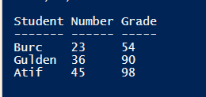

#Check if file/folder exists:
Clear-Host
if (Test-Path D:\PowershellApplications\my_top_process.txt){
Write-Output “File Exists”
}
else{
Write-Output “File Does Not Exist”
}
TXT FILES:
Get-Content "D:\PowerShellApplications\test.txt"
Get-Content "D:\PowerShellApplications\test.txt" -Tail 10
(Get-Content "D:\PowerShellApplications\test.txt")[4]
$file_out = (Get-Content "D:\PowerShellApplications\test.txt")[4..6]
Write-Output "File content is $file_out"
Get-Content "D:\PowerShellApplications\test.txt" | where {$_ -like "*frame*"}
#Select String in a file(grep):
$file_out = (Get-Content "D:\PowerShellApplications\test.txt")
$file_out | Select-String -Pattern "frame"
Select-String -Path "D:\PowerShellApplications\*.txt" -Pattern "frame"
#Şöyle güzel bişeyler:
$file_name = "D:\PowerShellApplications\test.txt"
try{
if(Test-Path $file_name){
Write-Output "File Exists"
$last_10_lines = Get-Content -Path $file_name -Tail 10 -ErrorAction stop -ErrorVariable "err"
Write-Output "Last 10 lines: "
Write-Output $last_10_lines
}
else{
Write-Output "File does not exists!"
}
}
catch{
Write-Output "Something Went Wrong = $err"
}
WRITING INTO TXT:
Write-Output "$(Get-Date): This is a text" | Out-File -FilePath D:\PowerShellApplications\wtxt_test.txt
Write-Output "$(Get-Process): List of process" |Out-File -FilePath D:\PowerShellApplications\wtxt_test.txt -Append
-----------------------------------------------------------------------------------------------------------------------------------------------------------------------------------------------
CSV FILES:
| Linked file: csvtest.csv |
#Get-Content CMD ile her türlü dosya okunabilir. Ancak bu durumda csv. uzantısı için olan özellikler kullanılamaz.
$get_csv = Get-Content "D:\PowerShellApplications\File Handling\csvtest.csv"
$get_csv
#IMPORT CSV:
$get_csv_properly = Import-Csv "D:\PowerShellApplications\File Handling\csvtest.csv"
$get_csv_properly

#Azcık eğlenelim:
$get_csv = Import-Csv "D:\PowerShellApplications\File Handling\csvtest.csv"
$get_csv | Sort-Object Student #Student'a göre sırala.
$get_csv | Select-Object -First 2
#Add content:
Add-Content -Path "D:\PowerShellApplications\File Handling\create_csv.csv" -Value '"Student","Number","Grade"'
#ARRAY:
$student_data = @(
'"Burc","23","98"'
'"Gulden","67","67"'
'"Atıf","56","78"'
)
$student_data | foreach {Add-Content -Path "D:\PowerShellApplications\File Handling\create_csv.csv" -Value $_}
$student_data
EXPORT:
Import-Csv "D:\PowerShellApplications\File Handling\csvtest.csv" |
Sort-Object Student |
Export-Csv "D:\PowerShellApplications\File Handling\create_csv2.csv" -NoTypeInformation
XML & JSON: